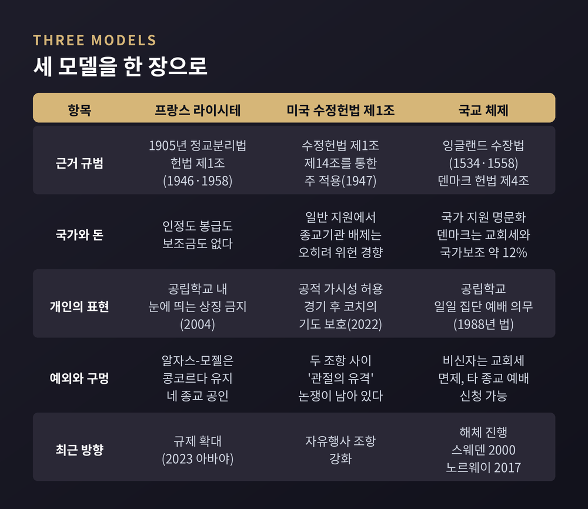
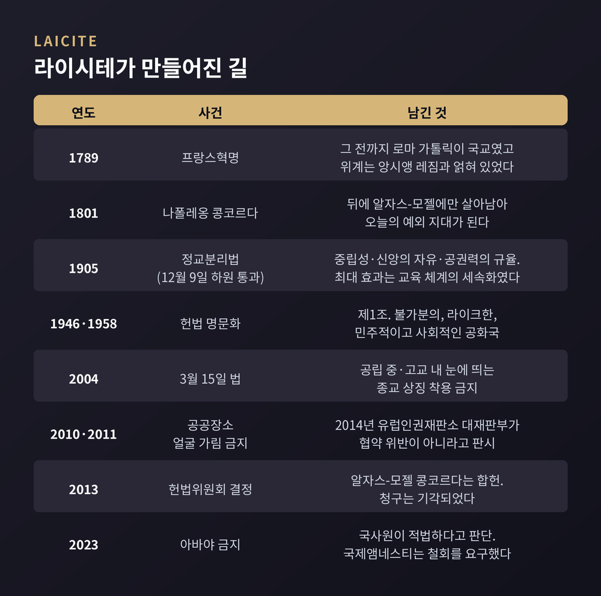
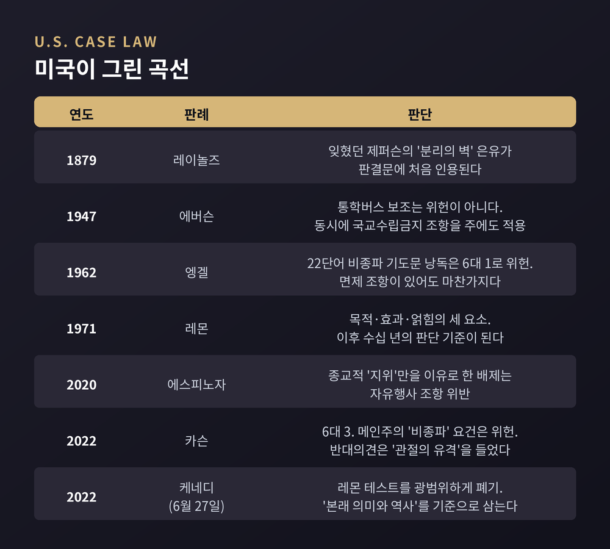
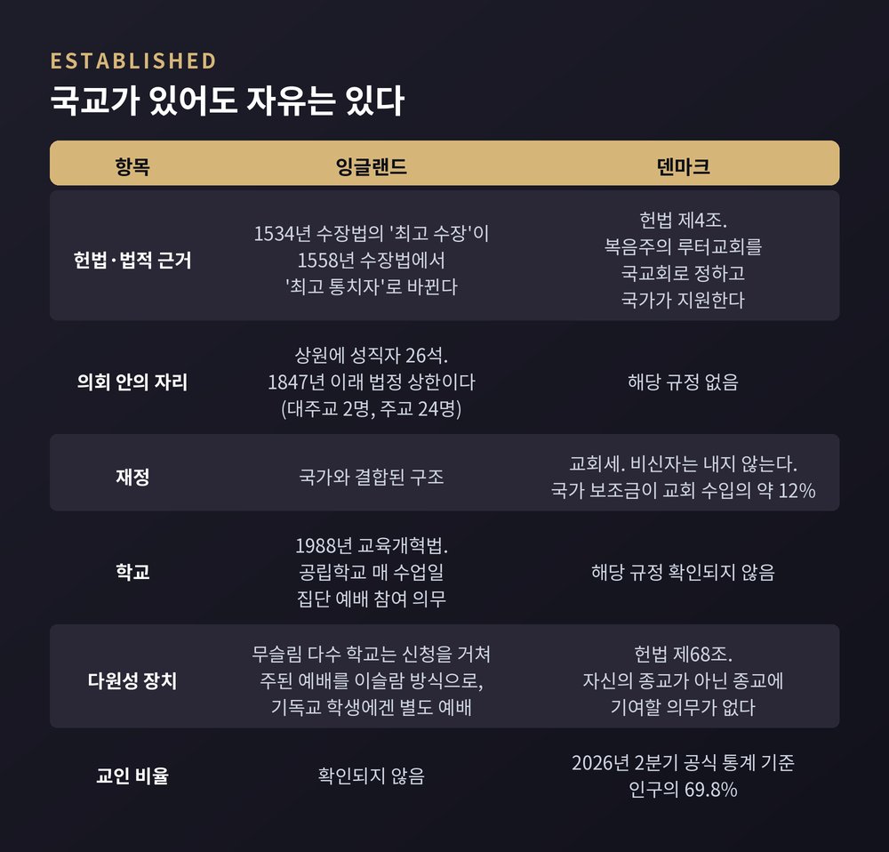
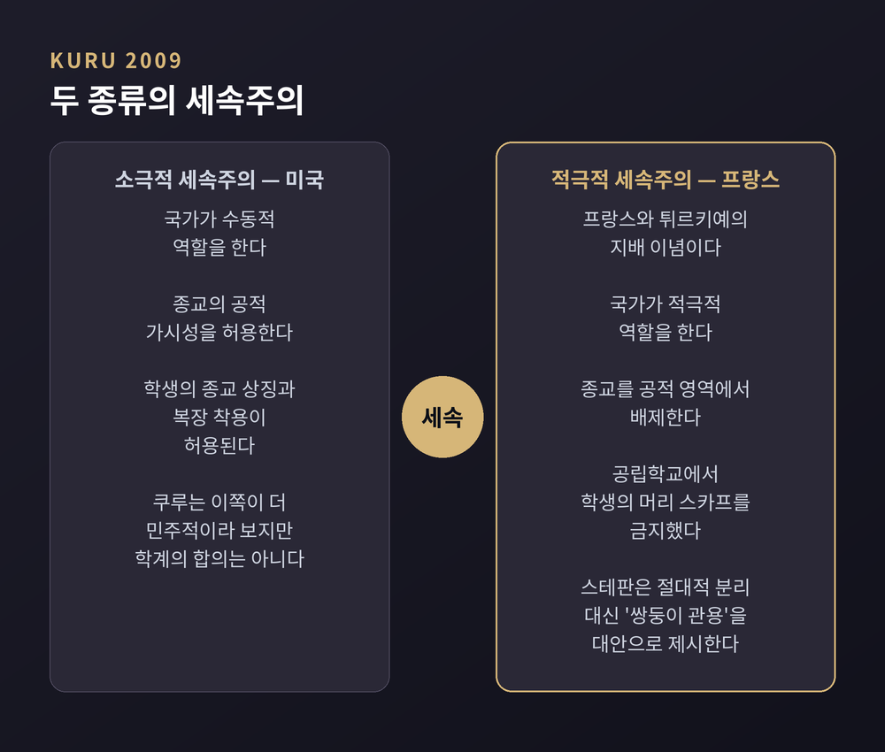
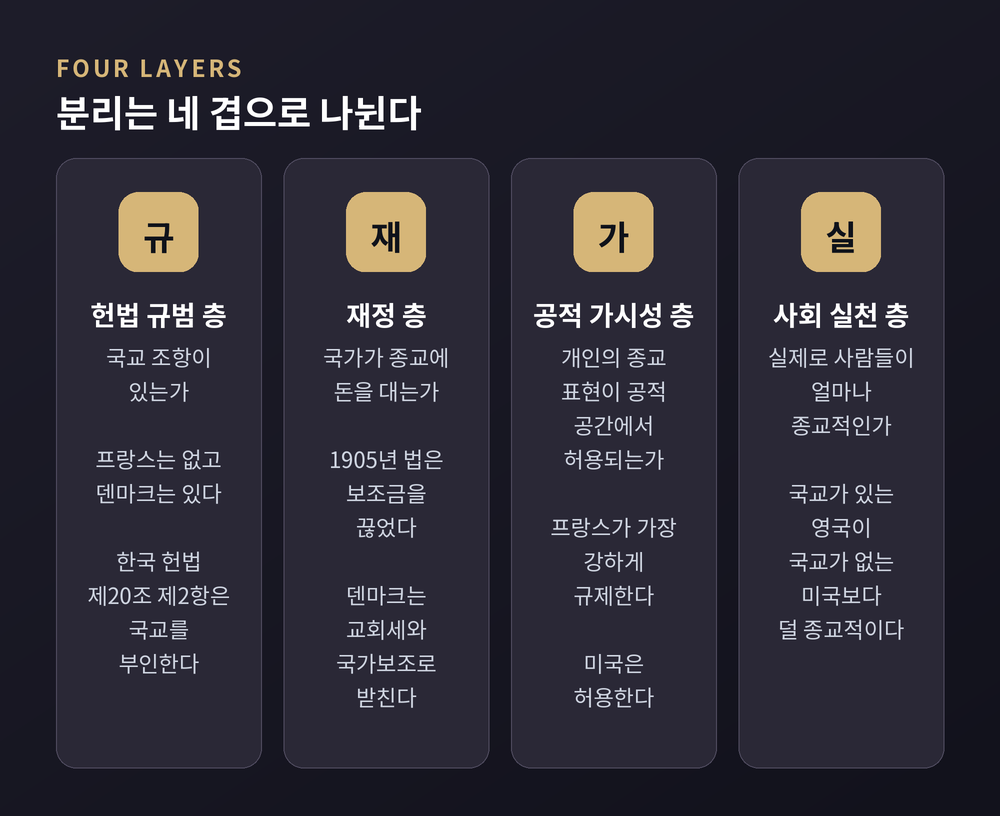

프랑스 라이시테, 미국 수정헌법 제1조, 국교 체제를 비교종교학으로 읽다 — 1905년 정교분리법과 알자스-모젤 예외, 제퍼슨의 '분리의 벽'과 레몬 테스트의 폐기, 잉글랜드 상원의 26석과 덴마크 헌법 제4조, 그리고 쿠루와 스테판이 말한 세속주의의 복수형
이번 글에서는 정교분리라는 한 단어가 실제로는 전혀 다른 세 가지 제도를 가리킨다는 점을 정리해 보겠습니다. 프랑스와 미국, 그리고 국교를 그대로 둔 나라들이 각각 어디에서 갈라졌는지 비교종교학의 시선으로 따라가 봅니다. 특정 신앙의 옳고 그름이 아니라, 국가와 종교가 서로를 어떻게 배치해 왔는지가 이 글의 주제입니다.
세 줄 요약
정교분리는 하나의 제도가 아닙니다. 최소한 세 갈래로 갈라집니다.
첫째는 프랑스형 라이시테입니다. 국가가 종교를 공적 영역 바깥으로 적극적으로 밀어냅니다.
둘째는 미국형 수정헌법 제1조입니다. 국가는 종교를 세우지도 않지만 억누르지도 않습니다.
셋째는 국교 체제입니다. 공식 국교를 유지하면서도 종교의 자유는 넓게 보장합니다.
종교사회학은 이 셋을 분리의 정도 차이로 보지 않습니다. 서로 다른 종류의 배치로 봅니다.

프랑스 정교분리법은 1905년 12월 9일 하원을 통과했습니다. 제3공화국 시기의 일입니다.
법은 세 가지 원칙 위에 서 있습니다. 국가의 중립성, 종교 활동의 자유, 그리고 종교에 대한 공권력의 규율입니다.
가장 널리 인용되는 조문은 이렇습니다. "공화국은 어떤 종교도 인정하지 않고, 봉급을 주지 않으며, 보조금을 지급하지 않는다."
입법을 이끈 인물은 아리스티드 브리앙, 에밀 콩브, 장 조레스, 프랑시스 드 프레상세였습니다. 당시 정부는 콩브가 이끈 좌파연합이었습니다.
뿌리는 더 깊습니다. 1789년 프랑스혁명 이전까지 로마 가톨릭은 프랑스의 국교였고, 가톨릭 위계는 앙시앵 레짐과 깊이 얽혀 있었습니다.
여기서 한 가지를 짚어둘 만합니다. 이 법의 가장 큰 실제 효과는 교회가 장악하고 있던 교육 체계의 세속화였습니다. 라이시테가 유독 학교에서 강하게 작동하는 이유가 여기 있습니다.
라이시테는 이후 1946년과 1958년 헌법에 명문화되었습니다. 프랑스 헌법 제1조는 프랑스를 불가분의, 라이크한, 민주적이고 사회적인 공화국으로 규정합니다.
다만 프랑스 안에서도 해석은 갈립니다. 다수설은 1905년 법 제1조와 제2조를 라이시테의 실질적 원천으로 봅니다. 반면 헌법상 라이시테는 국가 중립성이라는 일반 원칙일 뿐이고 구현 방식은 여러 선택지가 열려 있다는 견해도 있습니다.

알자스-모젤 이야기를 빼면 프랑스 사례는 반쪽이 됩니다.
1801년 나폴레옹 콩코르다는 1905년 법으로 프랑스 대부분 지역에서 폐지되었습니다. 그런데 1905년 당시 알자스-모젤은 독일에 병합된 상태였습니다.
그래서 이 지역에는 콩코르다가 그대로 살아남았습니다. 지금도 엄격한 정교분리가 적용되지 않습니다.
콩코르다는 네 개 종교 전통을 공인합니다. 가톨릭, 루터파, 개혁파, 그리고 유대교입니다.
세속주의 단체가 이 체제를 문제 삼았지만, 2013년 2월 21일 프랑스 헌법위원회는 합헌이라고 판단했습니다.
정리하면 이렇습니다. 가장 엄격한 분리를 표방하는 나라조차, 국토 전역에 균질한 정교분리를 적용하지는 않습니다.
프랑스는 공립 중·고등학교에서 눈에 띄는 종교적 상징 착용을 금지한 최초의 나라입니다. 2004년 3월 15일 법입니다. 사실상 머리 스카프를 겨냥한 입법으로 평가됩니다.
이어 공공장소에서 얼굴을 가리는 것을 금지하는 법이 2010년 제정되어 이듬해 시행됩니다.
이 법은 유럽인권재판소까지 갔습니다. 2014년 7월 1일 대재판부는 이 금지가 유럽인권협약을 위반하지 않는다고 판시했습니다.
양쪽 논리를 나란히 두겠습니다. 청구인 측은 이 금지가 비인간적이고 모멸적이며 사생활과 종교의 자유, 표현의 자유를 침해하고 차별적이라고 주장했습니다. 프랑스 정부 측은 국가가 "함께 살아가기"라는 이념을 증진할 정당한 이익을 갖는다고 반박했고, 재판소는 이를 받아들였습니다. 이 판결이 재량의 여지를 지나치게 넓게 인정해 소수자 보호에 실패했다는 학계 비판도 함께 나왔습니다.
가장 최근의 쟁점은 아바야입니다. 2023년 8월 27일 교육부 장관이 금지를 발표했고, 이튿날 전국 공립학교로 확정되었습니다.
프랑스 국사원은 이 조치를 적법하다고 봤습니다. 이런 복장이 2004년 법이 금지하는 종교적 소속의 눈에 띄는 표명에 해당할 수 있다는 이유였습니다. 국사원은 2022~2023학년도에 라이시테 위반 신고가 4,710건 접수됐고 그중 1,984건이 상징·복장에 관한 것이었다는 수치를 함께 제시했습니다.
반대 목소리도 분명합니다. 국제앰네스티는 이 금지를 차별적이라고 보고 철회를 요구했습니다. 표면상 세속주의를 말하지만 실제로는 누가 프랑스 문화에 속하는가에 대한 메시지를 보낸다는 지적도 있습니다.
어느 쪽이 옳은지는 이 글이 정할 문제가 아닙니다. 다만 라이시테가 원래의 국가 중립성에서 개인의 종교 표현 규제로 성격이 옮겨갔다는 비판이 근래 꾸준히 제기된다는 점은 기록해 둘 만합니다.
미국 수정헌법 제1조의 종교 조항은 둘입니다. 국교수립금지 조항과 자유행사 조항입니다.
흔히 인용되는 "교회와 국가 사이의 분리의 벽"이라는 표현은 헌법에 없습니다. 토머스 제퍼슨이 1802년 1월 1일 코네티컷주 댄버리 침례교회 연합에 보낸 편지에 나오는 문장입니다.
여기에 두 가지 단서가 붙습니다. 제퍼슨은 헌법이나 수정헌법 제1조의 기초에 직접 관여하지 않았습니다. 종교 조항은 매디슨과 제1대 연방의회의 작품입니다.
그리고 이 편지는 널리 유포되지 않아 한동안 잊혔습니다. 이후 대법원장 모리슨 웨이트가 역사가 조지 밴크로프트의 도움으로 이 편지를 찾아내 1879년 판결에 인용하면서 되살아났습니다.
즉 분리의 벽은 건국 시점에 확정된 원리가 아니라, 훨씬 뒤에 사법적으로 재발견되고 재구성된 은유입니다.
미국형 분리는 판례가 만들었습니다. 그 곡선이 흥미롭습니다.
1947년 에버슨 판결은 통학버스 요금 보조가 교구 학교 학생에게 지급된 사안을 다뤘습니다. 대법원은 위헌이 아니라고 봤습니다. 동시에 수정헌법 제14조를 통해 국교수립금지 조항을 주에도 적용했습니다.
1962년 엥겔 판결은 뉴욕주 교육위원회가 만든 22단어 비종파 기도문의 학교 낭독을 6대 1로 위헌이라 봤습니다. 참여가 자발적이고 학부모 요청 시 면제되더라도 위헌성이 치유되지 않는다고 판단했습니다.
1971년 레몬 판결은 목적, 효과, 얽힘이라는 세 요소의 기준을 세웠습니다. 이 레몬 테스트가 이후 수십 년간 판단의 축이 됩니다.
예전에는 국교수립금지 조항이 무게중심이었습니다. 지금은 자유행사 조항 쪽으로 기울었습니다.
2020년 에스피노자 판결은 종교적 지위만을 이유로 종교학교를 학교 선택 프로그램에서 배제하는 것이 자유행사 조항 위반이라고 봤습니다. 2022년 카슨 판결은 6대 3으로 메인주 등록금 지원의 비종파 요건을 위헌이라 판단했습니다.
그리고 2022년 6월 27일 케네디 판결이 나옵니다. 고교 미식축구 코치가 경기 후 50야드 라인에서 기도한 사안에서 코치가 승소했습니다. 대법원은 레몬 테스트를 광범위하게 폐기했다고 선언하며, 이를 추상적이고 몰역사적이라 평가했습니다. 대신 본래 의미와 역사를 기준으로 삼아야 한다고 밝혔습니다.
반론도 남아 있습니다. 카슨 판결에서 브라이어 대법관은 이 사안이 두 조항 사이의 "관절의 유격"에 해당하며, 주가 종교학교에 자금을 보낼 수 있다고 해서 반드시 그래야 하는 것은 아니라고 반대했습니다.

세 번째 모델로 넘어가겠습니다.
퓨리서치센터는 199개 국가와 자치 영토를 조사했습니다. 80개가 넘는 나라가 특정 종교를 우대합니다.
그중 43개국이 공식 국교를 둡니다. 27개국은 이슬람을, 13개국은 기독교나 특정 교파를 명시합니다. 여기에 더해 40개국이 비공식적으로 특정 종교를 선호하며, 그중 28개국이 기독교입니다.
잉글랜드부터 보겠습니다. 군주가 잉글랜드 국교회의 최고 통치자입니다. 1534년 수장법에서는 최고 수장이었으나, 1558년 엘리자베스 1세의 수장법에서 최고 통치자로 바뀌었습니다. 개인이 영적 수장이라는 함의를 피하기 위해서였습니다.
상원에는 국교회 성직자를 위한 26석이 유보되어 있습니다. 1847년 이래 법률로 정해진 상한입니다. 대주교 2명과 주교 24명으로 구성되고, 그중 5석은 자동 배정되며 나머지 21석은 자격 있는 교구 주교들이 채웁니다.
교육에서도 흔적이 뚜렷합니다. 1988년 교육개혁법은 공립학교 모든 학생이 매 수업일에 집단 예배에 참여하도록 규정합니다. 카운티 스쿨의 경우 그 예배는 전적으로 또는 주로 넓은 의미의 기독교적 성격을 띠어야 합니다.
여기서 오해를 하나 풀어야 합니다. 국교가 있다고 해서 다원성 장치가 없는 것은 아닙니다. 무슬림 학생이 다수인 학교는 종교교육 상설자문위원회에 신청해 주된 예배를 이슬람 방식으로 하고 기독교 학생에게는 별도 예배를 제공할 수 있습니다.
덴마크는 또 다른 결을 보여줍니다. 헌법 제4조는 복음주의 루터교회를 덴마크의 국교회로 정하고 국가가 지원하도록 합니다. 교회세가 있지만 비신자는 내지 않고, 국가 보조금이 교회 수입의 약 12%를 차지합니다. 헌법 제68조는 자신의 종교가 아닌 다른 종교에 개인적으로 기여할 의무가 없음을 보장합니다. 2026년 2분기 공식 통계에서 인구의 69.8%가 이 교회 신자입니다.

국교 체제를 굳어버린 유물로 보면 곤란합니다. 지난 25년 사이에도 계속 이동했습니다.
스웨덴은 2000년 1월 1일 교회령 발효로 스웨덴 교회를 국가교회에서 분리했습니다. 교회는 신앙공동체로 재규정되었습니다.
노르웨이는 두 단계를 밟았습니다. 2012년 5월 21일 의회가 헌법 개정으로 교회의 자율성을 확대했고, 2017년 1월 1일 부분적으로 국교를 해체했습니다. 국가교회에서 국민교회로 지위가 바뀌었고, 교회는 독립 법인이 되었습니다.
반면 덴마크는 같은 시기에 국교를 해체하지 않았습니다. 같은 북유럽 안에서도 길이 갈린 셈입니다.
여기서 학문적 틀을 하나 빌리겠습니다.
아흐메트 쿠루는 2009년 케임브리지대 출판부에서 낸 연구에서 세속주의를 둘로 나눕니다. 소극적 세속주의와 적극적 세속주의입니다.
소극적 세속주의는 국가가 수동적 역할을 하며 종교의 공적 가시성을 허용합니다. 미국의 지배 이념입니다.
적극적 세속주의는 국가가 종교를 공적 영역에서 적극적으로 배제합니다. 프랑스와 튀르키예의 지배 이념입니다.
쿠루가 든 대비가 선명합니다. 프랑스와 튀르키예는 공립학교에서 학생의 머리 스카프를 금지했고, 미국은 학생의 종교 상징과 복장 착용을 허용했습니다. 다만 소극적 세속주의가 더 민주적이라는 평가는 쿠루 자신의 판단이지 학계 전체의 합의는 아닙니다.

알프레드 스테판은 다른 각도를 제시합니다. 그는 절대적 분리 대신 "쌍둥이 관용"을 해법으로 내놓습니다.
민주주의 제도는 종교로부터 충분한 정치적 공간을 확보해야 합니다. 동시에 시민은 공적 삶에 참여할 정당한 권리를 행사할 공간을 민주주의 제도로부터 받아야 합니다. 물론 종교 개인과 기관도 민주적 절차의 결과와 민주 제도의 입법 주권을 존중해야 합니다.
스테판은 세속주의를 단수가 아니라 복수로 다뤄야 한다고 봤습니다. 모든 종교가 다성적이어서 권위주의적 해석과 민주적 해석을 함께 품듯, 세속주의 이념도 다성적이어서 세속주의자 역시 권위주의 체제와 민주 체제를 모두 세울 수 있다는 것입니다.
이 틀을 따라가면 분리는 최소 네 개 층으로 쪼개집니다. 헌법 규범 층, 재정 층, 공적 가시성 층, 그리고 사회 실천 층입니다.
그리고 이 네 층은 서로 독립적으로 움직입니다. 영국은 국교가 있지만 사회는 세속적입니다. 미국은 제도상 분리이지만 사회는 매우 종교적입니다. 프랑스는 개인 표현을 가장 강하게 규제하면서도 알자스-모젤이라는 예외를 안고 있습니다.
숫자로도 확인됩니다. 종교가 삶에서 매우 중요하다는 응답은 미국이 절반을 넘는 반면 서유럽은 조사에 따라 10%대 초중반에서 18%까지 편차를 보입니다. 조사 연도와 문항이 달라 정확한 비교는 조심해야 합니다만, 미국이 서유럽보다 뚜렷이 높다는 방향은 일관됩니다.

마지막으로 우리 조문을 겹쳐 보겠습니다.
대한민국 헌법 제20조는 두 항입니다. 제1항은 모든 국민이 종교의 자유를 가진다고 정합니다. 제2항은 국교는 인정되지 아니하며 종교와 정치는 분리된다고 정합니다.
이 원칙은 1948년 제헌헌법에서 처음 명문화되었습니다.
흥미로운 견해가 하나 있습니다. 영어의 'separation of church and state'를 '종교와 정치의 분리'로 옮긴 것이 오역이며, 유진오가 그 국문 번역본을 참조하면서 제헌헌법에 국교분리 대신 정교분리가 들어가게 되었다는 추정입니다. 학계에서 제기된 가설이므로 단정할 일은 아닙니다.
다만 문언만 놓고 보면 한국 조문은 미국형에 가깝습니다. 국교를 부인하고 분리를 선언하는 구조이기 때문입니다. 그러면서도 '교회'가 아니라 '종교'와 '정치'를 분리한다고 쓴 점은 독특합니다.
정리하면 이렇습니다.
정교분리는 하나의 정답이 아니라, 각 사회가 자기 역사와 협상한 결과입니다. 프랑스는 혁명과 교회 권력의 충돌에서, 미국은 판례의 긴 축적에서, 국교 국가들은 개혁과 점진적 해체에서 지금의 자리에 도착했습니다.
한계도 인정해야겠습니다. 이 글은 세 모델의 큰 골격만 짚었습니다. 각 나라 안의 지역 편차와 소수 종교의 실제 경험까지는 담지 못했습니다.
그래도 남는 문장 하나는 분명합니다. "분리는 벽이 아니라 조정입니다."
어느 모델이 가장 옳으냐고 물으신다면, 저는 답을 미루겠습니다. 대신 어느 층에서 무엇을 분리하고 있는지를 먼저 물어보시길 권합니다.